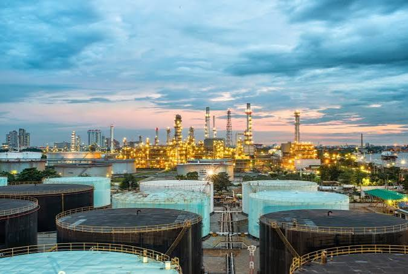

Industries We Serve — From Hydrocarbons to the Energy Transition
BNKM International provides process engineering consultancy across oil and gas, refining, petrochemicals, chemicals, fertilizers, and low-carbon energy transition industries, applying the same standards-compliant methodology to every sector.

Refinery and petrochemical infrastructure — representative of the industrial facilities our engineering teams support.
Oil & Gas Engineering Consultancy
Process engineering support for upstream production facilities, gas processing trains, and midstream infrastructure, from technical feasibility studies through detailed engineering.
- Gas conditioning and dehydration process design
- Flow assurance and heat and material balance development
- Equipment sizing for separators, compressors and exchangers
Refinery Engineering Services
Process design and revamp engineering for crude distillation, conversion, and treating units, supporting plant debottlenecking and reliability improvement programs.
- Unit revamp and plant debottlenecking studies
- Dynamic simulation for process optimization
- Utility integration across steam, power, and cooling systems
Petrochemical Engineering Services
Process engineering for olefins, aromatics, and polymer production units, addressing complex reaction, separation, and utility interfaces.
- Process design for reaction and separation trains
- Piping and instrumentation development
- Technical feasibility studies for capacity expansion
Chemicals Process Engineering
Process design and project engineering support for bulk and specialty chemical manufacturing facilities, with an emphasis on process safety and equipment sizing.
- Batch and continuous process design
- Process safety studies and hazard reviews
- Detailed engineering solutions for new and revamped units
Fertilizer Plant Engineering
Process engineering across ammonia, urea, nitric acid, and NPK complexes, covering revamp, energy efficiency, and capacity enhancement projects.
- Ammonia and urea process optimization
- Energy efficiency studies for synthesis loops
- Heat and material balance for granulation and utility systems
Green Ammonia Engineering
Process engineering support for electrolysis-based and renewable-powered ammonia synthesis schemes, integrating variable renewable power with synthesis loop operation.
- Green hydrogen-to-ammonia process integration
- Utility integration with renewable power sources
- Technical feasibility studies for green ammonia projects
CCUS Consultancy
Carbon capture, utilization and storage consultancy covering capture technology screening, process integration, and transport and storage interface engineering.
- Capture technology selection and process design
- Carbon reduction studies for existing facilities
- Utility and energy integration for capture trains
Sustainable Aviation Fuel Engineering
SAF engineering support spanning feedstock pre-treatment, hydroprocessing units, and blending and logistics infrastructure for aviation fuel producers.
- Feedstock handling and pre-treatment process design
- Process simulation for hydroprocessing routes
- Technical feasibility studies for SAF capacity additions
Low-Carbon Energy Projects
Project engineering support for hydrogen, e-fuels, and industrial electrification initiatives, aligned with clients' broader decarbonization roadmaps.
- Low-carbon fuels process design and integration
- Energy efficiency and carbon reduction studies
- Project engineering support through FEED and detailed engineering
One Engineering Methodology Across Every Sector
Whether the project is a refinery revamp or a green ammonia feasibility study, BNKM International applies the same disciplined process — technical feasibility studies, process design, simulation, and standards-compliant documentation — engineered to API, ASME, ISO, IEC, and NFPA requirements.
Discuss Your Industry-Specific Engineering Requirement
Our engineers are ready to support your hydrocarbons, chemicals, fertilizer, or energy transition project.